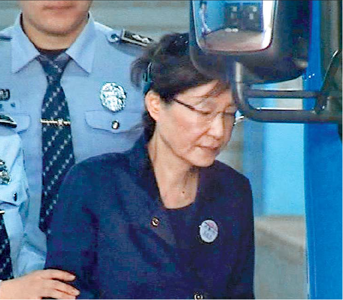
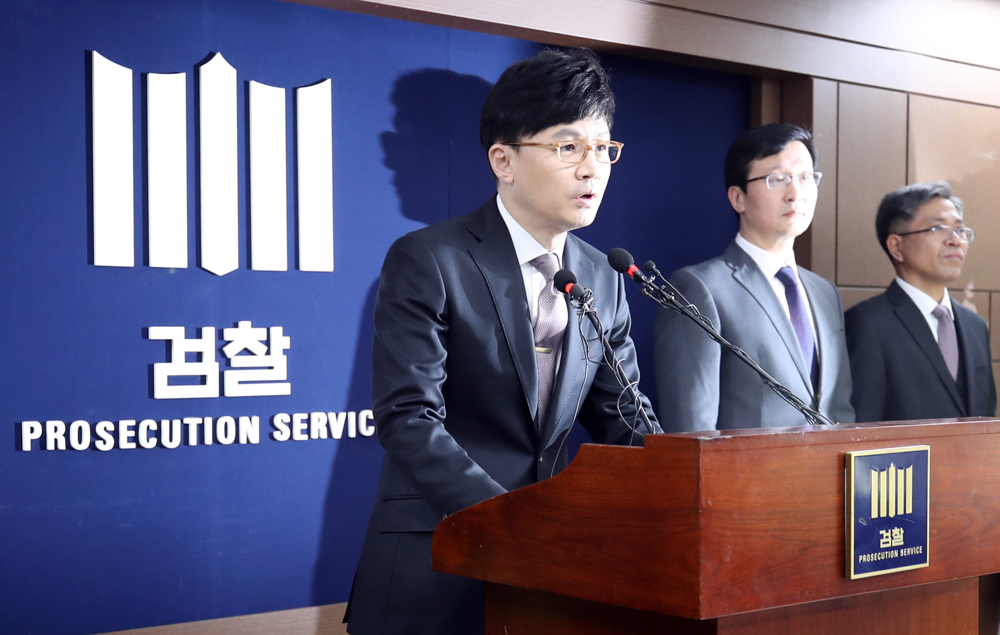
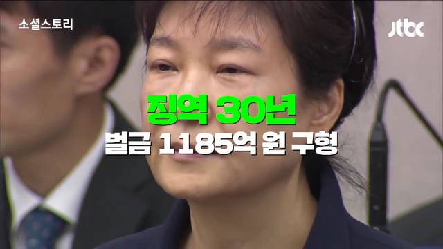
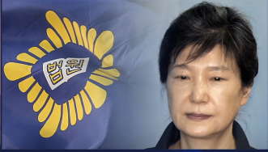
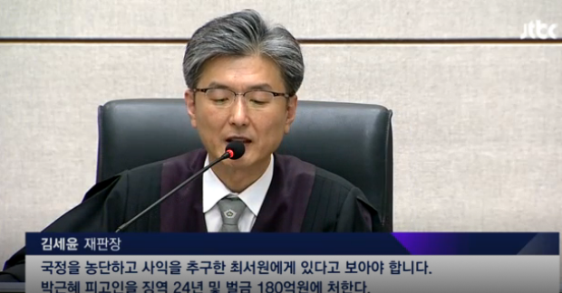
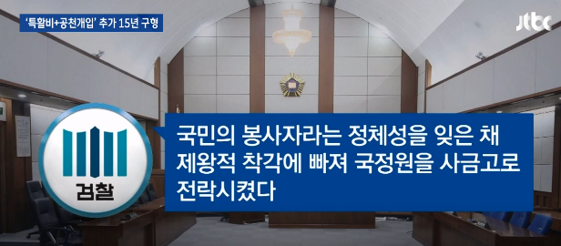

박근혜 검찰 출두
박근혜 전 대통령이 피의자 신분으로
검찰에 출두했다. "국민들께 송구하며, 성실히 조사받겠다"는 소감을 표명했던 박 전 대통령은 열흘 뒤 구속됐다.

국정농단 첫 재판 출석, 최순실과 대면
재판부 : "피고인도 혐의 부인 입장인가?"
박 前 대통령 : "네. 변호인 입장과 같습니다."

구속기간 연장, 3일 뒤 재판 보이콧
"재판부에 대한 믿음이 더는 의미 없다"

검찰, 특활비 뇌물, 공천 개입 혐의로 추가 기소
한동훈 3차장
“박 전 대통령, 특활비 35억원
기 치료 등 사적으로 사용”

검찰, 징역 30년/벌금 1185억원 구형
“진지하게 반성하는 모습을
단 한 차례도 보인 적 없다”

박근혜 전 대통령, 재판부에 답변서 제출
“1심 선고, 생중계 원치 않는다”

국정농단 1심서 징역 24년 벌금 180억원 선고
김세윤 재판장
“박근혜, 헌법적 책임 방기…
국정질서 큰 혼란”

검찰, 특활비와 공천개입 혐의로 징역 15년 구형
검찰 "반성의 모습 전혀 없어..엄벌해야"

국정원 특수활동비 상납 관여한 혐의로 문고리 3인방 선고
이재만 전 비서관은 징역 1년6개월,
안봉근 전 비서관은 징역 2년6개월에
벌금 2700만원, 추징 1350만원,
정호성은 징역 10개월, 집유 2년
각각 판결을 받았다-

박근혜 선고
ㅇㅇㅇㅇㅇㅇㅇㅇㅇㅇㅇㅇㅇㅇㅇㅇㅇㅇㅇㅇㅇㅇㅇㅇㅇㅇㅇㅇㅇㅇ